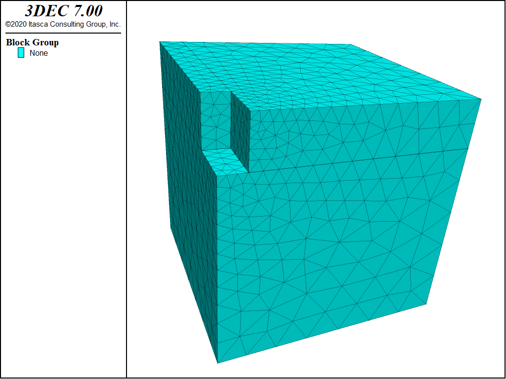
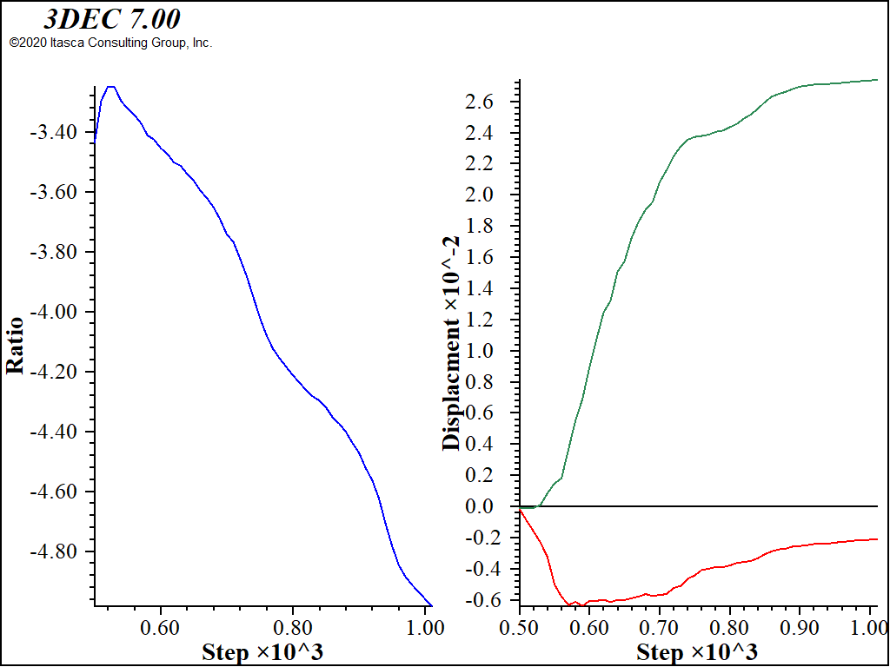
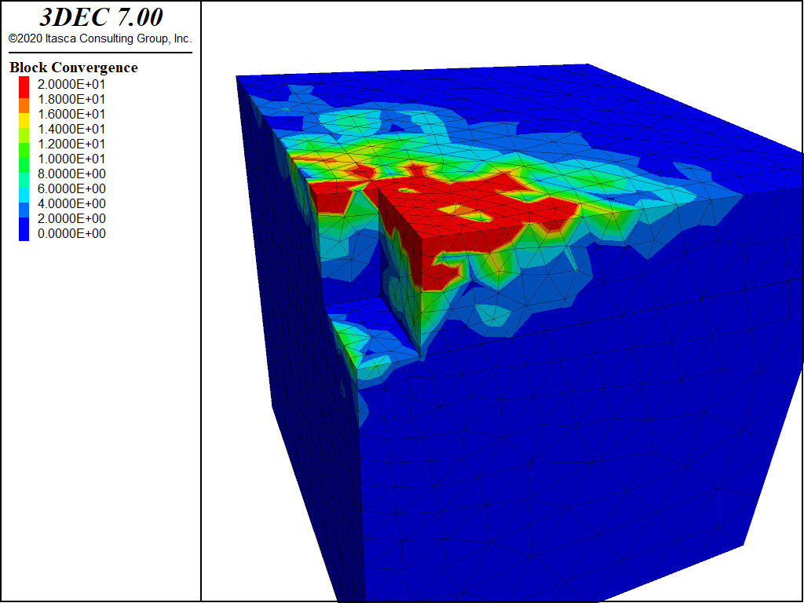

达到平衡
设置完初始条件时、模型计算结束时，以及可能存在的多个中间阶段，模型都需要达到“平衡”。到目前为止的示例中，通过简单的 求解模型（model solve） 命令实现这一点。但如何知道已经达到平衡？如何判断计算循环数是否超过需要，或模型的某个局部是否仍需继续计算？
可以使用 执行计算时步命令（model step） 或 执行计算时步（model cycle） 命令，手动执行 3DEC 计算循环。在某些情况下这很有用，最常见的是边界已规定速度，需要步进直到达到特定总位移。不过，一般情况下，希望循环计算持续到满足某个条件，例如动力模拟可计算到经过一定时长。求解模型（model solve） 命令允许循环持续到满足一个或多个限制条件（通过后续关键字指定）。静力模型中，最常关注的限制条件是“直到模型达到平衡”。
由于 3DEC 使用遵循物理规律的迭代过程达到静力平衡，因此这里所说的“处于平衡”，与完全收敛至静力解含义相同。3DEC 提供多种方式，量化和直观显示模型距收敛或平衡状态还有多远。不过，一如既往，越了解其中涉及的问题，模型就越可能高效且准确。
收敛准则
3DEC 提供四种不同准则，以确定何时达到平衡：局部力比、平均力比、最大力比和收敛度。下面分别介绍这些选项。
局部最大力比
局部力比是衡量网格点局部收敛情况的无量纲量。其思路很简单：将各力求和后剩余的不平衡分量，除以施加于该网格点的总力的某种度量。为提高性能，采用矢量的“曼哈顿范数”，也称“出租车范数”，定义为：
\[\langle v_i \rangle = |v_x| + |v_y| + |v_z|\]即矢量各分量绝对值之和。于是，局部力比可定义为：
\[\frac{\langle \sum_i f_i\rangle}{\sum_i \langle f_i \rangle}\]其中，\(f_i\) 为施加到某网格点上的全部力矢量。
局部最大力比是模型中所有网格点局部力比的最大值。这是衡量模型收敛情况的一种非常保守的指标。不过，当某网格点承受的力少于两个，或作用于该点的全部力均沿同一方向时，它存在缺陷。此时，唯一可能的“平衡”状态是分子和分母都趋近于零，而二者的比值将趋近于 1。
3DEC 会检测网格点是否只承受一个力矢量，并自动将其排除。但如果多个同向力作用于同一网格点，或第二个力相对于主要驱动力可以忽略，则这种检查并不足够。这些点会主导最大局部力比，使模型看起来始终无法有效收敛。
实际中，这种情况并不常见，大多数模型都不会遇到。但它确实会发生，因此为保证任意模型都能采用默认准则收敛，求解模型（
model solve） 没有将最大局部力比作为默认收敛准则。网格点最近一次计算的局部力比会被保存，可通过 FISH 的 区块节点局部力比（
block.gp.ratio） 获取，也可在绘图项中以局部力比（Local Force Ratio）使用。在 求解模型（
model solve） 命令中使用 ratio-local 关键字，可将局部力比用于求解准则。
平均力比
平均力比定义为所有网格点不平衡力分量之和，除以施加于各网格点的全部力的总和。即：
\[\frac{ \sum_j^n \langle \sum_i f_i \rangle }{ \sum_j^n \sum_i \langle f_i \rangle }\]该指标能够可靠衡量系统的整体收敛情况。对于相对均匀的模型，它表现很好。其稳健性足够高，因此 求解模型（
model solve） 的默认收敛准则设为 ratio-average 1e-5。不过，对于很不均匀的模型，局部收敛问题的影响可能被平均过程掩盖，用户因而无法察觉某个可能最受关注的区域仍需计算。这种情况可能由网格单元尺寸差异或较大的刚度差异引起。对于大型复杂模型，在信赖该指标之前，应仔细检查。见下文讨论。
在 求解模型（
model solve） 命令中使用 ratio-average 或简称 ratio 关键字，可将平均力比用于求解准则。
最大力比
最大力比定义为最大不平衡力，除以作用于所有网格点的平均总力。平均总力定义为：
\[\frac{\sum_j^n \sum_i \langle f_i^j \rangle}{N}\]其中，\(N\) 为模型中的网格点总数。
在 求解模型（
model solve） 命令中使用 ratio-maximum 关键字，可将最大力比用于求解准则。
收敛
convergence 求解方式的提出，是为了让用户能更好地控制所需的收敛判据，并克服依赖局部力比可能带来的缺点。
首先，创建一个称为局部力目标值（Local Force Target）的新网格点场变量。每个网格点和节点的该值均默认为 1e-4。可通过 初始化区块网格点目标力比命令（
block gridpoint initialize ratio-target） 命令或 FISH 内置函数 区块节点目标力比（block.gp.ratio.target） 修改。这个值表示对于该特定网格点而言，可视为“已收敛”的局部力比。这意味着网格不同位置的局部收敛准则可以不同。定义一个新量，直接称为收敛度，即当前局部力比与目标局部力比的比值。因此，收敛度为 1.0 时即视为“已收敛”。于是，最大收敛度就是衡量整个模型收敛情况的指标，与 求解模型（
model solve） 中的 convergence 关键字关联。收敛度可用于绘图项，也可通过 FISH 内置函数 区块节点收敛值（block.gp.convergence） 获取。默认情况下，convergence 为 1.0，与 ratio-local 限值为 1e-4 完全等价。如果局部力比计算在特殊情况下失效，可以将该网格点或节点的 ratio-target 设为较大值，实际上将其从整体收敛准则中排除。此外，模型中很小的区域对达到收敛所需时间产生过大影响的情况并不少见，原因可能是这些区域很小、很刚硬，或二者兼有。例如，少量刚度很高的结构支护，常常会主导一个很大模型的收敛时间。确认放宽这些节点的准则对主要关注的模型结果影响可以忽略后，可将其 ratio-target 设为 1e-3 或更高。
在 求解模型（
model solve） 命令中使用 convergence 关键字，即可采用收敛度准则。
选择收敛准则
如果 求解模型（model solve） 命令未指定收敛准则，默认采用 ratio 为 1e-5。根据我们的经验，对于复杂程度一般的模型，平均力比 1e-5 大致对应局部力比限值 1e-4。因此，选取 1e-4 作为默认 ratio-target。
对于大多数工程应用，最大局部力比 1e-4 通常已经足够，甚至偏保守。对许多用途而言，最大局部力比 1e-3，甚至高至 1e-2 也可能足够。模型的中间阶段（开挖顺序等）尤其如此，因为每一步后都耗时达到“完全”收敛，对模型最终状态的影响可能微乎其微。
评估平衡状态
为便于说明，采用一个极为简化的地表开挖模型进行演示。基本几何形状见图 1（Figure 1）。


图 1：沟槽开挖的简化示意模型。
第一个演示的完整数据文件如下。
model new
model large-strain off
; 创建沟槽
block create brick 0 30
block cut joint-set origin 0,0,24 join
block hide range pos-z 0 24
block cut joint-set dip 90 dip-dir 90 origin 3,0,0 join
block hide range pos-x 3 30
block cut joint-set dip 90 origin 0,6,0 join
block group 'Trench' range pos-y 0 6
block hide off
; 在沟槽附近采用较小网格单元划分模型
block zone size isolated-point 0 0 30 edge 0.5
block zone generate-new min-edge 0.5 max-edge 5 grad-surface 0.1
; 本构模型和参数
block zone cmodel assign mohr-coulomb
block zone property bulk 3e6 shear 2e6 density 1000
block zone property cohesion 1e5 friction 25 tension 1e3
; 边界条件
block gridpoint apply velocity-x 0 range pos-x 0
block gridpoint apply velocity-x 0 range pos-x 30
block gridpoint apply velocity-y 0 range pos-y 0
block gridpoint apply velocity-y 0 range pos-y 30
block gridpoint apply velocity-z 0 range pos-z 0
; 初始条件
model gravity 0 0 -10
block insitu topography ratio-x 0.5 ratio-y 0.5
model solve
; 历程
model history mechanical ratio-average
block history displacement-x position (3.1,0,30)
block history displacement-z position (3.1,0,30)
; 开挖
block delete range group 'Trench'
; 求解
model solve
model save 'simple'
;; 按收敛准则求解
;model solve convergence 1
;model save 'simple-convergence'
应始终通过以下检查，确认模型是否真正达到足够的平衡程度。首先，记录主要关注区域的位移和／或速度历程。如果循环结束时，这些位移仍变化较快，则模型尚未调整完毕。其次，绘制局部力比或收敛度的图形（等值线和等值面）。收敛度等值面图尤其有助于判断模型何处收敛最慢，以及应该在等值线图中进一步检查哪些位置（可能需要使用切割平面查看模型内部）。
图 2（Figure 2） 显示平均力比历程和沟槽顶部位移历程。注意，平均力比采用对数坐标绘制。对于行为正常的模型，预期会出现这种对数坐标下近似线性（即指数式）的收敛。破坏或其他非线性行为会导致收敛出现扰动，而不受约束的渐进破坏会使曲线趋于水平。位移历程同样显示出典型的轻微欠阻尼响应。可以清楚看到，沟槽壁顶部已停止明显运动，模型实际上已达到平衡。


图 2：简单沟槽模型的平均不平衡力比与位移历程。
图 3（Figure 3） 显示检查收敛度等值线的结果。虽然模型大部分区域的收敛度远小于 1，但靠近表面的少量网格点仍明显较高。这是此类问题的典型现象；表面网格点具有相同的抵抗运动惯性质量，而应力产生的驱动力较小。底部网格点通常会（也需要）先收敛，微小调整逆重力方向传播，因此表面网格点最后收敛。如果采用更严格的 convergence 1 准则，模型达到平衡所需步数会再增加一半。这是否重要，取决于表面网格点相对较小的调整有多大意义。如果准确的地表沉降值十分关键，就可能必须作这一更改。


图 3：网格点收敛度等值线。
| 这些内容对您有帮助吗？… | FLAC3D © 2019, Itasca | 原文更新于 2020 年 10 月 8 日 |